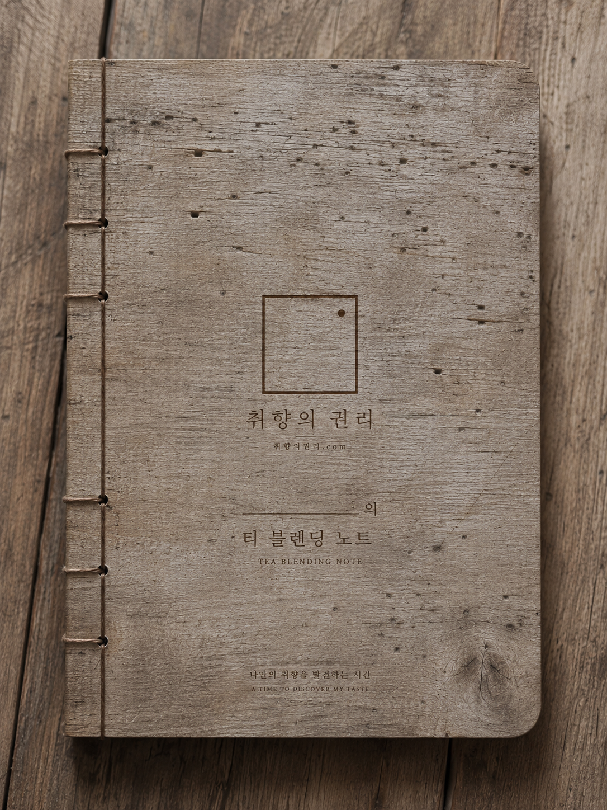

The Right to Taste · 취향의 권리
당신의 취향에는,
권리가 있습니다.
정답을 파는 브랜드가 아니라, 당신이 당신의 취향을 발견하는 시간을 짓는 브랜드.
Scroll
정답을 파는 브랜드가 아니라, 당신이 당신의 취향을 발견하는 시간을 짓는 브랜드.

하나.
무엇이 좋은 맛인지, 무엇이 옳은 취향인지.
그러나 정말, 정답이 있었을까요.
둘. 고재(古材)
사람의 취향 또한, 그렇게 완성되어 갑니다.
결 하나하나에 시간이 새겨지듯이.

정형화된 블렌딩은, 정답이 아닙니다.
셋. 정답 없는 블렌딩
맞고 틀림은 없습니다. 고르는 순간, 그것이 당신의 취향입니다.

그리고, 차.
차를 파는 일이 아니라, 취향을 짓는 일.
blend since 1975 · 청주 ↔ Chula Vista
넷. 취향을 담는 그릇
여섯 가지 원물, 한 권의 노트, 그리고 빈 페이지. 키트는 완성된 상품이 아니라, 당신이 당신의 결을 발견하고 기록하는 도구입니다.
A TIME TO DISCOVER MY TASTE

다섯. 함께 걷기
기관 출강 · 강사 과정 · 기업 워크숍. 정답을 전수하는 강의가 아니라, 각자의 취향을 여는 시간.
차 이야기 · 식물 이야기 · 명상. 느린 호흡으로 읽는, 취향에 관한 에세이.
차 한 잔으로 시작하는 하루. 무언가를 사는 대신, 잠시 쉬어가는 시간.